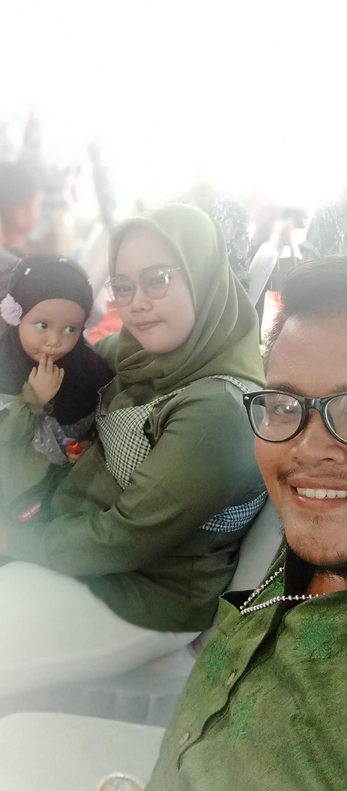

Ada tombol misterius nih...
Coba klik tombol di bawah buat lihat siapa bidadari yang paling spesial hari ini 👇
💖 Bidadariku 💖

"I Love You, Umma! Tetap jadi wanita hebat penyemangat abba untuk pulang lagi dari rantau, tetap jadi wanita setia ya sayang 😘😘😘 🤗 tunggu abba pulang." ✨
Browser lu tidak mendukung pemutar audio.
🎶 Alunan syahdu buat Umma